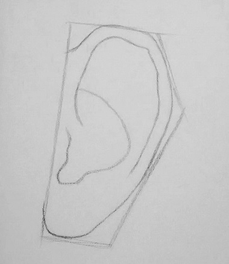

Al dibujar retratos, la gente generalmente no pone demasiado esfuerzo en crear un parecido con las orejas del sujeto porque generalmente reconocemos a las personas por sus rostros u otras características únicas que se destacan. Aunque no se les preste mucha atención, sigue siendo una buena práctica aprender a dibujar una oreja y comprender su estructura.
Delinea la forma de la oreja asegurándote de que la parte inferior de la oreja (lóbulo de la oreja) sea más pequeña en proporción a la parte superior de la oreja (conocida como hélice).
Dibuja dos curvas para indicar los pliegues principales dentro de la oreja. La primera curva debe cubrir la parte media y superior de la oreja. Puedes hacer esta curva tan suave o irregular como desees. Recuerda dejar un poco de espacio alrededor del borde. El lado izquierdo de la curva debe curvarse ligeramente hacia el centro de la oreja.
La segunda curva debe comenzar en la parte inferior de la oreja y curvarse hacia arriba, terminando justo antes de la primera curva. Esta curva debe ser más pronunciada que la primera y debe tener un ángulo más agudo en el punto donde se encuentra con la primera curva.
Al principio del tutorial, señalé tres formas principales dentro de una oreja. Dibujamos dos de ellas en el paso 2. La tercera forma se parece a la letra "y". Puedes dibujar la "y" muy suavemente o visualizarla en tu dibujo. La usaremos más adelante en este paso. Decide la dirección de la luz y usa líneas suaves para indicar dónde caerán las sombras más oscuras. Estos lugares serán los pliegues más prominentes y los valles más profundos dentro de la oreja. En este ejemplo, la luz brilla desde el lado izquierdo. Si alguna sombra cruza la "y", asegúrese de deformarla para complementar las crestas, protuberancias o valles de la "y".
Sombrea las áreas delineadas en el paso anterior con un lápiz 4B. Recuerda sombrear las partes más profundas de la oreja con un tono más oscuro y las protuberancias con un tono más claro.
Con un lápiz HB, sombrea el resto de la oreja, teniendo en cuenta que las protuberancias deben ser más claras y los valles más oscuros. Usa un difumino para difuminar cada zona por separado.Usa una goma de borrar moldeable para resaltar las zonas más claras de la oreja si es necesario.